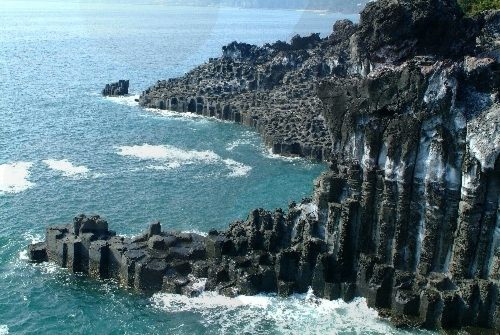
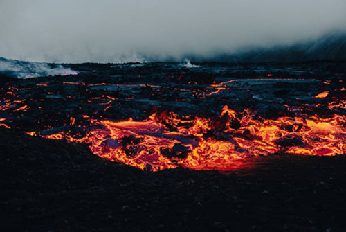
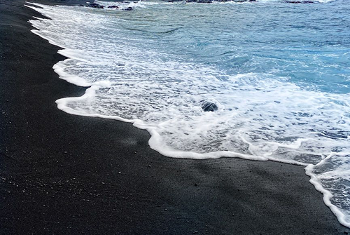

현무암은 과거 화산 활동의 흔적을 보여주는 암석으로,
화산섬이나 해양 지각 지역 등 마그마가 분출했던 곳에서 주로 발견됩니다.
이러한 지역은 검은색 다공성 바위와 주상절리 같은 독특한 지형을 형성합니다.
| 제주도 주상절리 |
아이슬란드 용암평원 |
하와이 빅아일랜드 |
|---|---|---|
|  |  |  |
| 바다의 장업한 기둥 모양의 현무암 절벽 | 용암이 식어 형성된 광활한 평원 | 화산 활동으로 생성된 검은 해변 |